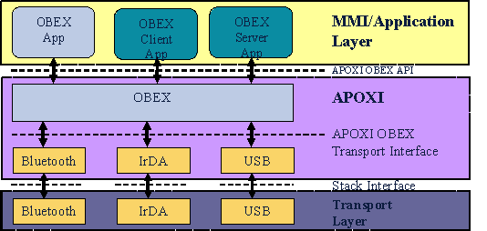
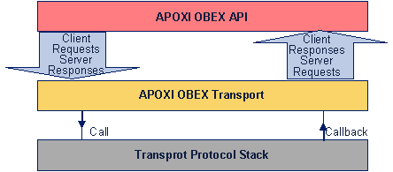

OBEX Overview
1 Introduction
OBEX stands for OBject EXchange protocol. It runs on top of Bluetooth, IrDA, USB and/or IP protocol. It is a protocol for exchanging objects which was initially designed by the Infrared Data Association, but has been adopted by Bluetooth and can also be used with USB, RS232 and WAP.
2 Overview
OBEX is a standardized way of exchanging data with other mobile or desktop computing devices across platform boundaries. OBEX-aware applications like phonebooks or organizers can either exchange industry-standard object formats like vCard or vCal which are characterized by their mime type or directly connect to a special application service offered by the server device under a target address.
Higher-level protocols such as SyncML can use OBEX as a platform-independent transport layer while OBEX itself can be run over various transport protocols such as Bluetooth, IrDA, USB and IP.
The position of OBEX within APOXI is shown in Figure 1.
 |
Figure 1. Position of OBEX within APOXI
The APOXI OBEX extension provides an API which supports reception and transmission of arbitrary data using the OBEX protocol over different transports (e.g. Bluetooth, IrDA, USB) while isolating the different transport stack interfaces from the application layer.
3 Application Interface
Application interfaces are significant for OBEX Client and Server implementers (such as a SyncML-DS client). The application interfaces provided by OBEX are described in this section.
3.1 OBEX Server API
An OBEX server handles incoming requests and issues responses. Each response carries a response code which indicates the result of processing the request. The functionalities provided by OBEX Server is listed in the following:
3.2 ObexOppServer
ObexOppServer provides OPP protocol support as a server. By overriding the virtual On<whatever_event_occured> methods an application developer can respond to OPP Push or Pull requests and submit the corresponding responses.
3.3 OBEX Client API
An OBEX client issues requests to a server and handles the resulting responses. The functionalities provided by Obex Client are listed in the following:
3.4 ObexOppClient
ObexOppClient enables application to act as an OPP client, which implies connecting to a remote server, issuing requests and collecting the responses.
3.5 Utility
The OBEX application interface utilities are listed in the following:
4 Transport Interface
The transport interface provided by OBEX is described in this section.
4.1 ObexLayer
ObexLayer is the Interface for direct access to the OBEX layer. Every transport adapter must provide an implementation of this interface.
4.2 ObexAbstractTransport
ObexAbstractTransport is the abstract interface for OBEX transports. This interface must be implemented for every transport protocol like Bluetooth, IrDA, etc. This interface provides access to the stack-specific OBEX implementation (and possibly to other profiles when supported by the stack) and abstracts transport stack and underlying hardware.
4.3 ObexProtocol
ObexProtocol is the interface base class for protocol layer access and handles the transport-centric aspects of
them.
4.4 AbstractTransport
AbstractTransport is the abstract representation of communication hardware. This interface must be implemented for every transport subsystem like Bluetooth, IrDA, etc.
4.5 Low-level transport interface
The low-level transport interface is used to glue the transport protocol stacks to APOXI OBEX. Therefore the transport must be able to issue and handle all standard OBEX operations (Connect, Put, Get, SetPath, Abort, Disconnect) and to assemble and serialize all four OBEX header formats. Low-level Transport Interface is shown in Figure 2.
 |
Figure 2. Low-level Transport Interface
Both client- and server applications must register with the transport. Servers must remain registered as long as they are listening for incoming connection requests. Clients only need to be registered for the lifetime of a connection.